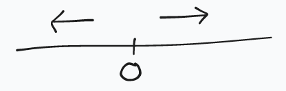

Homogeneous Coordinates
There's a lot to love about linear transforms. Unfortunately they can't express translations1. However, with a clever trick we can almost do this.

The idea is to embed our original space in higher dimensional space, apply a linear transform to this space, and then project back into the original space.
1.
This is because any linear transform necessarily maps 0 to 0:
If T is a linear map from a vector space U to a vector space V (both over
the same field F), then
T(0) = T(0 * 0)
^-------- The zero _field_ element
= 0 * T(0)
= 0